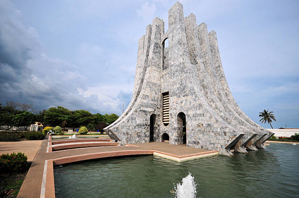

Must-See Places in Accra

Kwame Nkrumah Mausoleum
A tribute to Ghana's first president, this mausoleum is a place of historical significance and a beautiful park.

Jamestown Lighthouse
Visit the historical Jamestown area and climb the lighthouse for a panoramic view of Accra.

Arts Centre
Explore the vibrant arts and crafts market where you can buy traditional Ghanaian art and souvenirs.
Event Calendar
Upcoming Events
- Oct 20: Traditional Music Festival
- Nov 5: Accra Food Fair
- Dec 1: Art & Culture Exhibition
Past Events
- March 06: Independence Celebration
- May 22: Traditional Dance Workshop
- Jul 30: Local Crafts Market
User Testimonials
"The Kwame Nkrumah Mausoleum is a must-visit! It was incredible to learn about Ghana's history."
"The view from Jamestown Lighthouse is breathtaking. A highlight of my trip to Accra!"
"I found the most beautiful souvenirs at the Arts Centre. Highly recommended for all visitors."